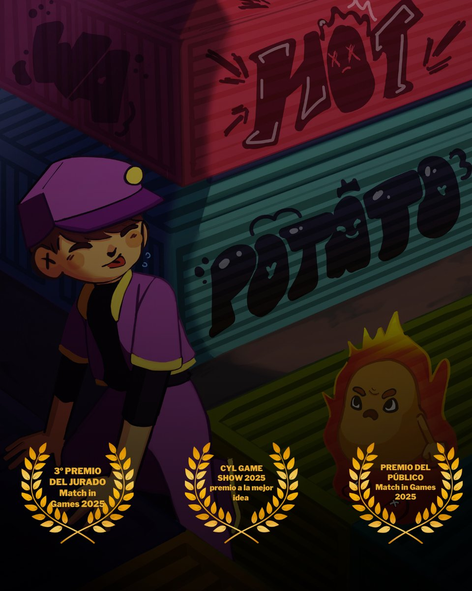

Hot Potato
What is Hot Potato?
A social party brawler developed at Wild Alchemists. The premise is borrowed from childhood tag: one player becomes the potato, and whoever holds it when the timer expires loses — in a suitably comical explosion.
The game won the Audience Award at Match in Games 2025 — strong external validation that the "instantly understandable" design target was met.
Core Loop
Players can run, jump, slide, dodge, and push — physics-driven controls that feel unpredictable but readable. Tagging transfers the potato instantly, making every proximity moment mutually dangerous for both players.
Design & Production
- Designed the full game loop — tagging, movement, player abilities, round flow.
- Implemented player movement in UE5 using Blueprints and the GASP system.
- Ran and documented playtesting sessions; iterated on game feel, pacing, and clarity.
- Created animation specs, state diagrams, and feature lists.
- Led full production pipeline — goals, sprints, cross-department coordination.
- Removed blockers and maintained team communication across design, programming, and art.
- Kept mechanics accessible for both casual and competitive players.
Challenges
The central tension: making chaos feel fair. Players need to feel like they lost through their own choices — not arbitrarily. Every mechanic was shaped by this.
Round length required the most iteration. Early versions ran 3–4 minutes — tension collapsed mid-round. Cutting to 60–90 seconds kept urgency constant and dramatically improved the "one more round" pull in playtests.
Awards
Development details under NDA. Get in touch for more information.